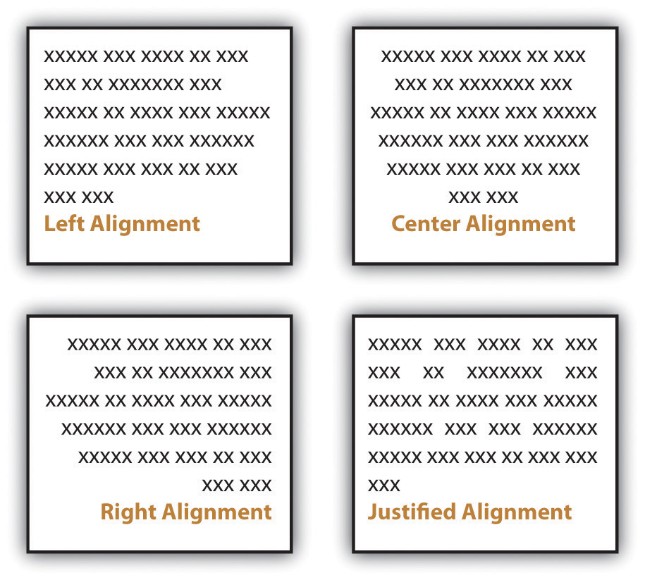
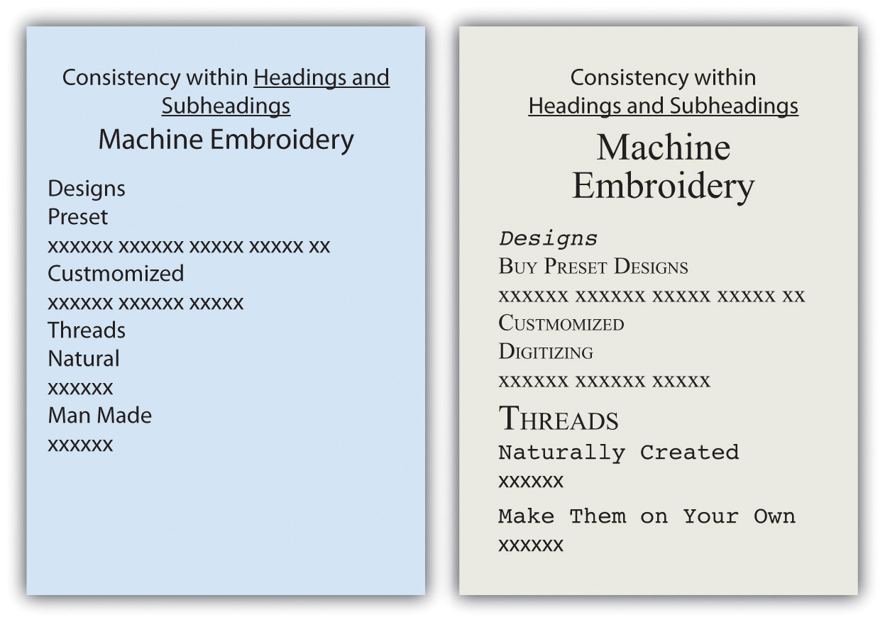
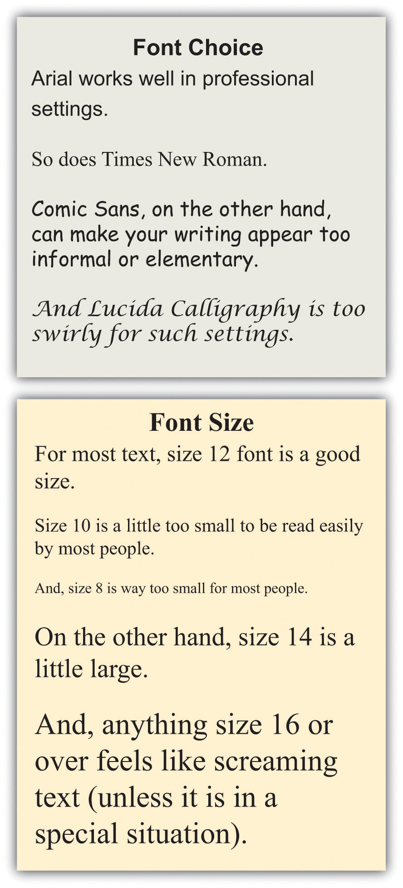

Think about a résumé, an event flyer, a page in a research paper, a business letter, and a page in a novel. All these items start out exactly the same—as a blank page. The second step is typically also the same—text is added. The third step, however, differs, as the text formatting is varied to create the desired look. Based on requirements or audience expectations, you will sometimes want to conform to conventions. Other times, you can employ more personal choices. For example, an essay conforming to the American Psychological Association (APA) or Modern Language Association (MLA) style sheet (discussed in Chapter 10 "Publishing") has very rigid requirements regarding font choice, margin size, subhead formatting, and placement of page numbers. Likewise, as discussed in Chapter 12 "Professional Writing", Section 12.1 "Writing Business Letters", a business letter has some audience-expected features, such as date, name and address of person receiving the letter, greeting, introduction, body, closing, salutation, signature, and contact information for the sender of the letter. A business letter, however, does have a bit more flexibility than a paper written in APA style does since you can vary some aspects, such as your font choices and margins. On the other hand, a business letter written in an unusual or silly font will not likely be well received, so you’ll want to make choices with audience expectations in mind.
As you begin to design a document, you will need to consider the basic layout, margins, line spacing, and alignment on the page. If none of these options matter to you, you can simply accept the default choices of the software you are using. For most documents, however, you will likely want to make some changes from the default settingsSoftware choices made in the factory and that remain in place until a user chooses to make changes.. You might even want to change your default settings to match the desired format of your most frequently used document type.
You will need to decide the best basic layout for your document. For example, if you are writing a novel, you will likely want to use straight text in paragraphs. But if you are creating a comparison of three novelists’ treatments of the same topic, you might want to use columns or a chart. If you are creating a flyer, you might prefer strategically placed text boxes (for more on flyers, see Chapter 14 "Public and Personal Writing", Section 14.2 "Creating Flyers and Brochures"). You will make your layout and formatting choices based on set requirements or your personal choices regarding the visual effects you want to convey to your readers.
White spaceThe area on a paper or screen that is not covered with text or images. is the area on a page (hard-copy or digital) that is not covered with text or images. Keep in mind that well-used white space makes a page more visually appealing and easier to read. White space, of course, is not always white; on a blue sheet of paper, or against a blue backdrop on a web page, white space is blue. Regardless of color, a balance of white space and text makes a page easier and more inviting to read.
When you are free to make your white-space choices, use white space to set headings and subheadings off from the main text. Use either 1½ or double spacing for the text body to provide a little white space between the lines of text, and use one-inch margins all around. Using columns is another way to create white space. Columns allow you to place considerable amounts of text on a page without creating an overwhelming appearance.
You can also set margins and line spacing to manage the amount of white space in a document. In some situations, such as a specific academic research or professional setting, you are likely to encounter specific guidelines regarding margin widths and line spacing. In many situations, however, you will be able to choose your margins and spacing. Apply logic as you make these choices so that your document can function to your best advantage. For example, if you or someone else will need space to add notes or edits, use double or triple spacing and wide margins. On the other hand, if you need the text to fit within a tight spot, tighten both the margins and line spacing. Keep in mind that the tighter the text is, the less inviting it is to read. Indenting is another option when making basic layout plans. Again, some situations require it and others leave it up to your discretion.
Alignment choices can also affect the overall look of a page of text. With most word processing software, you can choose to align text to the left, to the rightText where all lines end on the same imaginary vertical line on the right side of the paper., or to the centerText where all lines are centered from left to right.. You can also justifyText where all lines begin on the same imaginary vertical line on the left side of the paper and end on the same imaginary vertical line on the right side of the paper. text, which is sort of a combination of the other three options:
Figure 9.1
Most business and academic documents use left alignmentText where all lines begin on the same imaginary vertical line on the left side of the paper. as the standard format. The other three options are used less often but can provide effective alternatives in specific situations. For example, you will usually center-align text on a title page; you will typically right-align the page numbers in a table of contents, and you might justify text when you want to fit the maximum amount of text within the given space (such as within a newspaper article). Both center-aligned text and right-aligned text should be used sparingly since they are difficult to read in large amounts.
Detailed information that would interrupt the flow of your document is better placed in an appendix than in the flow of your text. Using appendices makes it easier for readers to read your text, and they set apart details that some readers might not want to read or might want to read independently from the main body of text. If you have one item to place in an appendix, title it “Appendix,” and refer to it as such in the text. If you have more than one document to place in appendices, label them “Appendix A,” “Appendix B,” and so on. As with images, always refer to the appendices at the relevant point in the text, but do not repeat the bulk of the content within the text. The following are examples of information typically relegated to an appendix:
Along with basic layout choices, you can control the look and feel of a document using certain text features. As with the other formatting options, you should base your choices based on your personal preferences, requirements, and audience expectations.
You can use headings and subheadings to break up text to make it easier to read. Keep two points in mind when you are deciding whether to use headings and subheadings: consistency and organization. Your headings should follow a consistent pattern in regards to both parallelism and content hierarchy, and the headings should help the readers see the relationships between parts of the text.
Figure 9.2
Headings and subheadings also provide a means of organizing text into categories that help readers comprehend the relationship between parts of the text both during a thorough read and when quickly glancing over the text. Clearly, headings and subheadings are not appropriate in some situations, such as within business letters and in documents that are only a couple of paragraphs long.
Take efforts to create short, informative headings and subheadings. Within a document, maintain consistency for headings and subheadings. For example, you might choose to make all the main headings gerund phrases (e.g., Using Text Features) and all the subheadings questions (e.g., Will Visual Text Features Help?). Also, use the same font features for each level of heading to create consistency. In some situations, your heading format is preset. Other times, you have choices. In both situations, you should maintain parallel format across each level.
Today’s word processors typically offer a wide variety of font choices. You should choose a font that meets your needs. For example, a research paper might require the use of the Times New Roman font for ease of reading, an invitation might look best in a swirly script for fanciness, and a poster often demands a dark, heavy font for distance viewing. Two common fonts that are widely used in professional and academia settings are Times New Roman and Arial.
Figure 9.3
Typically, you should use 12-point font for standard text. Headings might be a size or two larger. In the absence of required sizes, you should use standard sizes to make your text easy to read.
Along with font choices and sizes, you can also enhance your text using visual text features, such as those that follow. You can use the features in many ways, such as to call attention to text, to set text apart, and to make text easier to read at a glance.
As a rule, you should use these features sparingly so you do not diminish their effects. Exceptions to this general rule are some of the features that have specific, set uses. For example, standard format requires that you write acronyms in all caps and titles of books in italics.
Although you do want to take steps to break up the text on a page, you do not want your pages to look cluttered. To create a clean look, keep your features to a minimum.